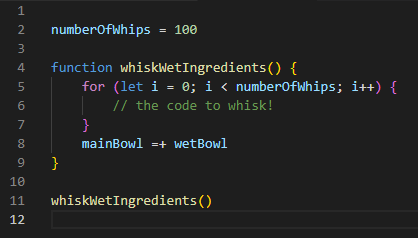
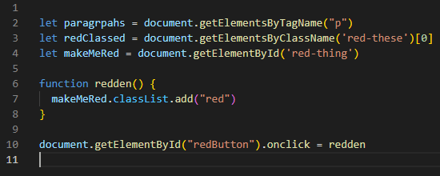
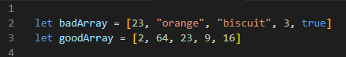
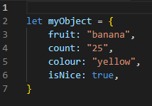

JavaScript and the DOM
If HTML is the pancake and CSS is the berries, butter and syrup that goes on top, what is JavaScript? The recipe!
Control Flow and Loops
Control flow is the order in which something executes functions etc in JavaScript. For a real world analogy, when you make pancakes, there is a particular order you should do things in order to make the pancakes. You can’t mix the start putting batter in the pan before you mix everything together, for example. I mean, you could, but you wouldn’t get what you are expecting. And functions are the recipe book, which you can “execute” and do. You can get the ingredients, bowls, utensils and pan out ready to be used, but nothing will happen until you pick it up and start using them- executing them. Loops also help in this. Say you are whisking together wet ingredients- do you stop once you’ve done one circle around the bowl and put the whisk aside? Do you keep going forever, never to leave that spot, forever stuck in a state of whipping together the eggs, oil, and vanilla extract? No, silly! You mix it until it looks right- let’s say, 100 times!
Lines 4-9 define the function- in other words, what are we doing? It’s like, thinking about what exactly to do. Then, line 11 executes it and actually makes it happen.
DOM
The DOM is what we use when we want to interact with things in the HTML. It represents the HTML as objects that JavaScript can interact with and manipulate. For example, you can make a button that changes all the paragraphs on a page to the colour red. Or if you don’t want to do that you can change everything on a page with the class “red-these”. Or, just one single letter in a span with a particular ID. I don’t know why they are red, perhaps they are bothered about having to change.
So I chose just to change a single letter here, but where it says “makeMeRed” inside the function, you can replace with paragraphs or redClassed to change all the paragraphs or objects with a class “red-these” respectively.
Array vs Objects
An Array is the same type of data stored, which is accessed by asking for what number down the array the data is. What I mean by that is, the very first thing is 0, the second thing is 1, the third thing is 2 and so on. Somewhat confusing! But that’s how we count in this business.
An Object is similar, but you can store many types of data, and they are accessed by their their “key” for example:
You can get “banana” using myObject.fruit or 25 by using “myObject.count”.
BACK TO TOP